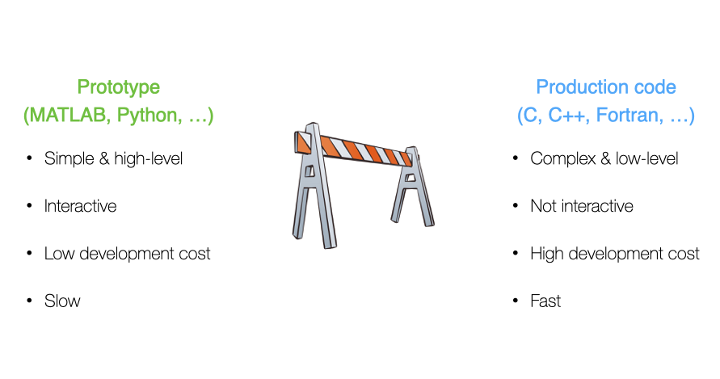
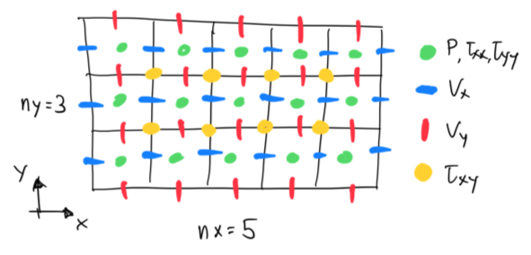

Agenda
📚 The "two-language problem",ParallelStencil.jlXPU implementation
💻 Reference testing, GitHub CI and workflows
🚧 Exercises:
XPU codes for diffusion / acoustic waves 2D
Cauchy-Navier elasticity (waves)
CI workflows
Address the two-language problem
Backend portable XPU implementation
Towards Stokes I: acoustic to elastic
Reference testing, GitHub CI and workflows
Combining CPU and GPU implementation within a single code.
You may certainly be familiar with this situation in scientific computing:

Which may turn out into a costly cycle:

This situation is referred to as the two-language problem.
Multi-language/software environment leads to:
Translation errors
Large development time (overhead)
Non-portable solutions
Good news! Julia is a perfect candidate to solve the two-language problem as Julia code is:
simple, high-level, interactive (low development costs)
fast, compiled just ahead of time (before one uses it for the first time)
Julia provides a portable solution in many aspects (beyond performance portability).
As you may have started to experience, GPUs deliver great performance but may not be present in every laptop or workstation. Also, powerful GPUs require to be hosted in servers, especially when multiple GPUs are needed to perform high-resolution calculations.
Wouldn't it be great to have single code that both executes on CPU and GPU?
Using the CPU "backend" for prototyping and debugging, and switching to the GPU "backend" for production purpose.
Wouldn't it be great? ... YES, and there is a Julia solution!
Let's get started with ParallelStencil.jl
ParallelStencil enables to:
Write architecture-agnostic high-level code
Parallel high-performance stencil computations on GPUs and CPUs
ParallelStencil relies on the native kernel programming capabilities of:
CUDA.jl for high-performance computations on GPUs
Base.Threads for high-performance computations on CPUs
Before we start our push-up exercises, let's have a rapid tour of ParallelStencil's repo and README.
So, how does it work?
As first hands-on for this lecture, let's merge the diffusion 2D solvers diffusion_2D_perf_loop_fun.jl and the diffusion_2D_perf_gpu.jl into a single XPU code using ParallelStencil.
Let's get started with using the ParallelStencil.jl module and the ParallelStencil.FiniteDifferences2D submodule to enable math-close notation.
💻 We'll start from the diffusion_2D_perf_gpu.jl (available in the scripts/ folder in case you don't have it at hand from lecture 6) to create the diffusion_2D_xpu.jl script.
The first step is to handle the packages:
const USE_GPU = false
using ParallelStencil
using ParallelStencil.FiniteDifferences2D
@static if USE_GPU
@init_parallel_stencil(CUDA, Float64, 2)
else
@init_parallel_stencil(Threads, Float64, 2)
end
using Plots, PrintfThen, we need to create two compute functions , compute_q! to compute the fluxes, and compute_C! for computing the update of C, the quantity we diffusion (e.g. concentration).
Let's start with compute_q!. There we want to program the following fluxes
ParallelStencil's FiniteDifferences2D submodule provides macros we need: @all(), @d_xi(), @d_yi().
The macros used in this example are described in the Module documentation callable from the Julia REPL / IJulia:
julia> using ParallelStencil.FiniteDifferences2D
julia>?
help?> @allThis would, e.g., give you more infos about the @all macro.
So, back to our compute function (kernel). The compute_q! function gets the @parallel macro in its definition and returns nothing.
Inside, we define the flux definition as following:
@parallel function compute_q!(qx, qy, C, D, dx, dy)
@all(qx) = -D*@d_xi(C)/dx
@all(qy) = -D*@d_yi(C)/dy
return
endNow that we're done with compute_q!, your turn!
By analogy, update compute_C!.
@parallel function compute_C!(C, qx, qy, dt, dx, dy)
@inn(C) = @inn(C) - dt*( @d_xa(qx)/dx + @d_ya(qy)/dy )
return
endSo far so good. We are done with the kernels. Let's see what changes are needed in the main part of the script.
In the # Physics section, change total time to ttot = 1e2. The # Numerics only needs nx, ny and nout; the kernel launch parameters being now automatically adapted:
@views function diffusion_2D(; do_visu=false)
# Physics
Lx, Ly = 10.0, 10.0
D = 1.0
ttot = 1e2
# Numerics
nx, ny = 32*4, 32*4 # number of grid points
nout = 50
# [...]
return
endIn the # Derived numerics, we can skip the scalar pre-processing, keeping only
# [...]
# Derived numerics
dx, dy = Lx/nx, Ly/ny
dt = min(dx,dy)^2/D/4.1
nt = cld(ttot, dt)
xc, yc = LinRange(dx/2, Lx-dx/2, nx), LinRange(dy/2, Ly-dy/2, ny)
# [...]In the # Array initialisation section, we need to wrap the Gaussian by Data.Array (instead of CuArray) and initialise the flux arrays:
# [...]
# Array initialisation
C = Data.Array(exp.(.-(xc .- Lx/2).^2 .-(yc' .- Ly/2).^2))
qx = @zeros(nx-1,ny-2)
qy = @zeros(nx-2,ny-1)
# [...]In the # Time loop, only the kernel call needs to be worked out. We can here re-use the single @parallel macro which now serves to launch the computations on the chosen backend:
# [...]
t_tic = 0.0; niter = 0
# Time loop
for it = 1:nt
if (it==11) t_tic = Base.time(); niter = 0 end
@parallel compute_q!(qx, qy, C, D, dx, dy)
@parallel compute_C!(C, qx, qy, dt, dx, dy)
niter += 1
if do_visu && (it % nout == 0)
# visualisation unchanged
end
end
# [...]The performance evaluation section remaining unchanged, we are all set!
Wrap-up tasks
Let's execute the code having the USE_GPU = false flag set. We are running on multi-threading CPU backend with multi-threading enabled.
Changing the USE_GPU flag to true (having first relaunched a Julia session) will make the application running on a GPU. On the GPU, you can reduce ttot and increase nx, ny in order achieve higher .
ParallelStencil also allows for more explicit kernel programming, enabled by @parallel_indices kernel definitions. In style, the codes are closer to the initial plain GPU version we started from, diffusion_2D_perf_gpu.jl.
As the macro name suggests, kernels defined using @parallel_indices allow for explicit indices handling within the kernel operations. This approach is currently more performant than using @parallel kernel definitions.
As second push-up, let's transform the diffusion_2D_xpu.jl into diffusion_2D_perf_xpu.jl.
💻 We'll need bits from both diffusion_2D_perf_gpu.jl and diffusion_2D_xpu.jl.
We can keep the package handling and initialisation identical to what we implemented in the diffusion_2D_xpu.jl script.
Then, we can start from the flux macro an compute function definition from the diffusion_2D_perf_gpu.jl script, removing the ix, iy indices as those are now handled by ParallelStencil. The function definition takes however the @parallel_indices macro and the (ix,iy) tuple:
# macros to avoid array allocation
macro qx(ix,iy) esc(:( -D_dx*(C[$ix+1,$iy+1] - C[$ix,$iy+1]) )) end
macro qy(ix,iy) esc(:( -D_dy*(C[$ix+1,$iy+1] - C[$ix+1,$iy]) )) end
@parallel_indices (ix,iy) function compute!(C2, C, D_dx, D_dy, dt, _dx, _dy, size_C1_2, size_C2_2)
if (ix<=size_C1_2 && iy<=size_C2_2)
C2[ix+1,iy+1] = C[ix+1,iy+1] - dt*( (@qx(ix+1,iy) - @qx(ix,iy))*_dx + (@qy(ix,iy+1) - @qy(ix,iy))*_dy )
end
return
endThe # Physics section remains unchanged, and the # Numerics section is identical to the previous xpu script, i.e., no need for explicit block and thread definition.
We can then keep the scalar preprocessing (D_dx, D_dy, _dx, _dy) in the # Derived numerics section.
In the # Array initialisation, make sure wrapping the Gaussian by Data.Array. The cuthreads and cublocks tuples are no longer needed.
The # Time loop gets very concise; XPU kernels are launched here also with @parallel macro (that implicitly includes synchronize() statement):
# Time loop
for it = 1:nt
if (it==11) t_tic = Base.time(); niter = 0 end
@parallel compute!(C2, C, D_dx, D_dy, dt, _dx, _dy, size_C1_2, size_C2_2)
C, C2 = C2, C # pointer swap
niter += 1
if do_visu && (it % nout == 0)
# visu unchanged
end
endHere we go 🚀 The diffusion_2D_perf_xpu.jl code is ready and should squeeze the performance out of your CPU or GPU, running as fast as the exclusive Julia multi-threaded or Julia GPU implementations, respectively.
What about multi-XPU support and distributed memory parallelisation?
ParallelStencil is seamlessly interoperable with ImplicitGlobalGrid.jl, which enables distributed parallelisation of stencil-based XPU applications on a regular staggered grid and enables close to ideal weak scaling of real-world applications on thousands of GPUs.
Moreover, ParallelStencil enables hiding communication behind computation with a simple macro call and without any particular restrictions on the package used for communication.
This will be material for next lectures.
Pursuing the exploration of various physical processes, we are missing two important categories: solid mechanics (e.g., Navier-Cauchy equations) and fluid mechanics (e.g., Navier-Stokes equations).
The goal of this part of the lecture is to explore the elastic wave propagation processes, building upon acoustic waves from lecture 3.
We'll use a practical approach to familiarise with stress, strain, strain-rates and elastic rheology, i.e., the elastic shear and bulk modulus. (We'll concentrate on the fluid mechanics in a following lecture.)
The Navier-Cauchy equation we are interested in reads as following, when expressed (linearised) in terms of velocities ():
where is the pressure, the velocity, the bulk modulus, the elastic shear modulus, the deviatoric stress tensor, the density, and the Kronecker delta.
One can recognise the terms from the acoustic wave equation, namely:
which suggests only volumetric or bulk effects to be considered in the latter.
Note that the original constitutive relation in linear elasticity (elastic rheology) is
However, we here consider deviatoric stresses (removing the trace of the stress tensor - the pressure ) and derive the expression w.r.t. time to express it as function of strain-rates .
The task is now to implement the Navier-Cauchy equations in 2D starting from the acoustic 2D script realised in lecture 3.
We can start from the acoustic_2D_elast0.jl script located in the (available in the scripts/ folder).
After running the script to confirm all works as expected, start by:
making a new version of the script: acoustic_2D_elast1.jl
modifying the array dimensions in order to have velocity arrays with appropriate sizes allowing to update all pressure values (nx, ny),
renaming qx and qy to dVxdt and dVydt, respectively.
The next task is to add the normal stress, the and components of the stress tensor.
One can make the analogy of stresses being "fluxes of momentum", the velocity equations (4) being the momentum balance. Since we here consider elastic processes (Cauchy-Navier elasticity), these fluxes will be time dependent (see eq. 3).
Start by making a new version of the script named acoustic_2D_elast2.jl. Then, add for the normal stress component following (the array needs to be initialised):
τxx .= τxx .+ dt*(2.0.*μ.* (diff(Vx,dims=1)/dx .- 1/3 .*∇V))Note that one has to remove the divergence (volumetric part) of the stress tensor if considering its deviatoric form (removing the trace of the tensor, i.e. the pressure we explicitly define and compute).
Also, adding elastic shear rheology, we need to define the elastic shear modulus in the # Physics section.
Repeat this for the normal stress component:
τyy .= τyy .+ dt*(2.0.*μ.* (diff(Vy,dims=2)/dy) .- 1.0/3.0 .*∇V)We now have to fix the divergence which is not yet defined, replacing the appropriate calculation by (that needs to be initialised):
∇V .= diff(Vx,dims=1)./dx .+ diff(Vy,dims=2)./dyHaving added elasticity to the acoustic process (elastic stresses instead of only pressure), we need to adapt the time step stability condition:
dt = min(dx,dy)/sqrt((K + 4/3*μ)/ρ)/2.1to take shear modulus into account.
This new addition should now permit to propagate a first elastic wave. However, taking a closer look at the animation, you may certainly see that the wave propagates as a square. Reason for this is that we are missing the shear stress, the components of the tensor (see figure below).
We're soon done.
However, his last part is a homework task.
Now it's time to wrap up this part before moving to more Git workflows. So far, we learned about:
How Julia solves the two-language problem
XPU programming with ParallelStencil
Cauchy-Navier elastic wave propagation (solid mechanics)
Last lecture we learned how to make and run tests for a Julia project.
This lecture we will learn how to run those tests on Github automatically after you push to it. This will make sure that
tests are always run
you will be alerted by email when a test fails
You may start to wonder why we're doing all of these tooling shenanigans...
One requirement for the final project will be that it contains tests, which are run via GitHub Actions CI. Additionally, you'll have to write your project report as "documentation" for the package which will be deployed to its website, again via GitHub Actions.
These days it is expected of good numerical software that it is well tested and documented.
GitHub Actions are a generic way to run computations when you interact with the repository. There is extensive documentation for it (no need for you to read it).
For instance the course's website is generated from the markdown input files upon pushing to the repo:
https://github.com/eth-vaw-glaciology/course-101-0250-00/tree/main/website contains the source
the https://github.com/eth-vaw-glaciology/course-101-0250-00/blob/main/.github/workflows/Deploy.yml is the GitHub Actions script which tells it to run Franklin.jl to
create the website https://eth-vaw-glaciology.github.io/course-101-0250-00/
How do we use GitHub Actions for CI?
create a Julia project and add some tests
make a suitable GitHub Actions scrip (that .yml file)
pushing to GitHub will now run the tests (maybe you need to activate Actions in Setting -> Actions -> Allow all actions)
In the last lecture I setup a project to illustrate how unit-testing works.
Let's now add CI to this:
create a Julia project and add some tests [done]
make a suitable GitHub Actions scrip (that .yml file)
pushing to GitHub will now run the tests (maybe you need to activate Actions in Setting -> Actions -> Allow all actions)
For step 2 we follow the documentation on https://github.com/julia-actions/julia-runtest.
The .yml file, adapted from the README of julia-runtest:
name: Run tests
on: [push, pull_request]
jobs:
test:
runs-on: ${{ matrix.os }}
strategy:
matrix:
julia-version: ['1.6']
julia-arch: [x64]
os: [ubuntu-latest]
steps:
- uses: actions/checkout@v2
- uses: julia-actions/setup-julia@v1
with:
version: ${{ matrix.julia-version }}
arch: ${{ matrix.julia-arch }}
- uses: julia-actions/julia-buildpkg@v1
- uses: julia-actions/julia-runtest@v1The CI will create a badge (a small picture) which reflects the status of the Action. Typically added to the README.md:

It can be found under
https://github.com/<USER>/<REPO>/actions/workflows/CI.yml/badge.svgand should be added to the near the top of README like so:
[](https://github.com/<USER>/<REPO>/actions/workflows/CI.yml)(this also sets the link to the Actions which gets open upon clicking on it)
👉 All together on https://github.com/eth-vaw-glaciology/course-101-0250-00-L6Testing.jl
This makes the .yml a bit more complicated:
name: CI
on:
[push, pull_request]
jobs:
test:
name: Julia ${{ matrix.julia-version }} - ${{ matrix.os }} - ${{ matrix.julia-arch }} - ${{ github.event_name }}
runs-on: ${{ matrix.os }}
strategy:
fail-fast: false
matrix:
julia-version: ['1.6']
julia-arch: [x64]
os: [ubuntu-latest]
steps:
- uses: actions/checkout@v2
- uses: julia-actions/setup-julia@v1
with:
version: ${{ matrix.julia-version }}
arch: ${{ matrix.julia-arch }}
- uses: actions/cache@v1
env:
cache-name: cache-artifacts
with:
path: ~/.julia/artifacts
key: ${{ runner.os }}-test-${{ env.cache-name }}-${{ hashFiles('**/Project.toml') }}
restore-keys: |
${{ runner.os }}-test-${{ env.cache-name }}-
${{ runner.os }}-test-
${{ runner.os }}-
- uses: julia-actions/julia-buildpkg@v1
- run: julia --check-bounds=yes --color=yes -e 'cd("<subfolder-of-julia-project>"); import Pkg; Pkg.activate("."); Pkg.test()'Note that you have to adjust the bit: cd("<subfolder-of-julia-project>").
👉 The example is in course-101-0250-00-L6Testing-subfolder.jl.
GitHub Actions are limited to 2000min per month per user for private repositories.
👉 See Logistics for submission details.
The goal of this exercise is to:
Finalise the XPU implementation of the 2D diffusion code started in class
Familiarise with XPU programming, @parallel and @parallel_indices
In this exercise, you will finalise the diffusion 2D scripts started during lecture 7.
Create a new folder in your GitHub repository for this week's (lecture 7) exercises. In there, create a new subfolder diffusion2D_xpu where you will add following script:
diffusion_2D_xpu.jl
diffusion_2D_perf_xpu.jl
Finalise the diffusion_2D_xpu.jl script from class.
This version should contain compute functions (kernels) definitions using @parallel approach together with using ParallelStencil.FiniteDifferences2D submodule.
Include the kwarg do_visu to allow disabling plotting when assessing performance.
Also, make sure to include and update the performance evaluation section at the end of the script (as in the previous GPU and CPU script versions).
You can get started looking at the diffusion_2D_perf_gpu.jl script (available in the scripts/ folder in case you don't have it at hand from lecture 6).
Finalise the diffusion_2D_perf_xpu.jl script from class.
This version should contain compute functions (kernels) definitions using @parallel_indices approach.
Use a macros for the flux definition to avoid unnecessary memory accesses. Also, make sure to adapt the array you initialise.
Include the kwarg do_visu to allow disabling plotting when assessing performance.
Also, make sure to include and update the performance evaluation section at the end of the script (as in the previous GPU and CPU script versions).
Create a README.md file in your lecture 7 GitHub folder, adding a first section about "Diffusion 2D XPU performance".
In this section, include a figure reporting the performance of both the diffusion_2D_xpu.jl and diffusion_2D_perf_xpu.jl implementation of the diffusion 2D solver using the metric.
Vary the number of grid points nx = ny = 16 * 2 .^ (1:8) (or until you run out of memory on the GPU). Report as well the value for memory copy of the given GPU (and arithmetic precision) you are using. Make sure to including figure axis labels and add a short figure caption or description to the README.
ttot (or nt) as function of the number of grid points to achieve this (avoiding the high-resolution runs to take forever to finalise).👉 See Logistics for submission details.
The goal of this exercise is to:
Create a XPU implementation of the 2D acoustic code
Familiarise with XPU programming, @parallel and @parallel_indices
In this exercise, you will create an acoustic 2D scripts, "merging" the multi-threaded CPU version acoustic_2D_perf_loop_fun.jl and the plain GPU version acoustic_2D_perf_gpu.jl from last week's lecture 6.
In this week's lecture 7 GitHub folder, create a new subfolder acoustic2D_xpu where you will add following script:
acoustic_2D_xpu.jl
acoustic_2D_perf_xpu.jl
Start working on the acoustic_2D_xpu.jl script.
This version should contain compute functions (kernels) definitions using @parallel approach together with using ParallelStencil.FiniteDifferences2D submodule.
Include the kwarg do_visu to allow disabling plotting when assessing performance.
Also, make sure to include and update the performance evaluation section at the end of the script (as in the previous GPU and CPU script versions).
To get get started, get inspired by the diffusion_2D_xpu.jl script we mostly terminated in class during lecture 7 and the know-how you acquired finalising exercise 1.
If you still struggle getting started you'll find, after homework 6 due-date, the acoustic_2D_perf_gpu.jl script in the scripts/ folder.
Create the acoustic_2D_perf_xpu.jl script.
This version should contain compute functions (kernels) definitions using @parallel_indices approach.
Include the kwarg do_visu to allow disabling plotting when assessing performance.
Also, make sure to include and update the performance evaluation section at the end of the script (as in the previous GPU and CPU script versions).
Create a README.md file in your lecture 7 GitHub folder, adding a second section about "Acoustic 2D XPU performance".
In this section, include one figure that reporting the performance of both the acoustic_2D_xpu.jl and acoustic_2D_perf_xpu.jl implementation of the acoustic 2D solver using the metric.
Vary the number of grid points nx = ny = 16 * 2 .^ (1:8) (or until you run out of memory on the GPU). Report as well the value for memory copy of the given GPU (and arithmetic precision) you are using. Make sure to including figure axis labels and add a short figure caption or description to the README.
👉 See Logistics for submission details.
The goal of this exercise is to:
Familiarise with Cauch-Navier elasticity
Step from acoustic waves to elastic waves
Get a glimpse into solid mechanics
In this exercises your task will be to terminate the 2D implementation of an elastic wave solver based on the Cauchy-Navier elasticity as presented in lecture 7.
In class, we stopped at Task 2, adding normal stress components.
The remaining 2 tasks to achieve a full implementation of the 2D elastic wave solver are:
adding shear stresses
re-arranging the order of computation
Create a folder titles elastic2D within this week's lecture 7 GitHub parent folder. Copy in there the following codes developed in class (refer to the course section for directions regarding details implementing these 3 code versions):
acoustic_2D_elast0.jl
acoustic_2D_elast1.jl
acoustic_2D_elast2.jl
Start by making a new duplicate of the latest acoustic_2D_elast2.jl script, renaming it acoustic_2D_elast3.jl. In this new script, add the shear stress component:
τxy .= τxy .+ ??Note that we assume the strain(-rate) tensor to be symmetric, thus the following is to be assumed .
Make sure to correctly interpret Einstein's notation - normal and shear stresses are not defined in the same way.

The shear stress derivative needs then to be included into the momentum equations, used to compute the rate of change of velocity in both and direction (similarly to the normal stress).
dVxdt and for computing dVydt.For enhanced stability of the elastic solver, it is important to use the newly computed quantities as soon as possible.
Create a last duplicate of the acoustic_2D_elast3.jl script, renaming it elastic_2D.jl.
In this final version of the script, move the pressure update at the beginning of the time loop. First update pressure in order to use the updated pressure later on when computing the pressure gradient in the velocity update.
You should now have a 2D elastic solver up and running 🚀
Compare the results between acoustic and elastic wave propagation for identical physical and numerical input parameters. Create one figure for each simulation that you add to the README in a new final section. Comment briefly about the results.
👉 See Logistics for submission details.
The goal of this exercise is to:
setup Continuous Integration with GitHub Actions
copy the repository you created for Lecture6-Exercise3 over to your Lecture7 solution folder as L7CIExercise (if you did not complete that exercise, use the package https://github.com/mauro3/SimpleTraits.jl instead, make sure to not copy over the .github and .git folders)
follow/revisit the lecture and in particular look at the example at https://github.com/eth-vaw-glaciology/course-101-0250-00-L6Testing-subfolder.jl to setup CI
push to GitHub and make sure the CI runs and passes
add the CI-badge to the folder-local README.md